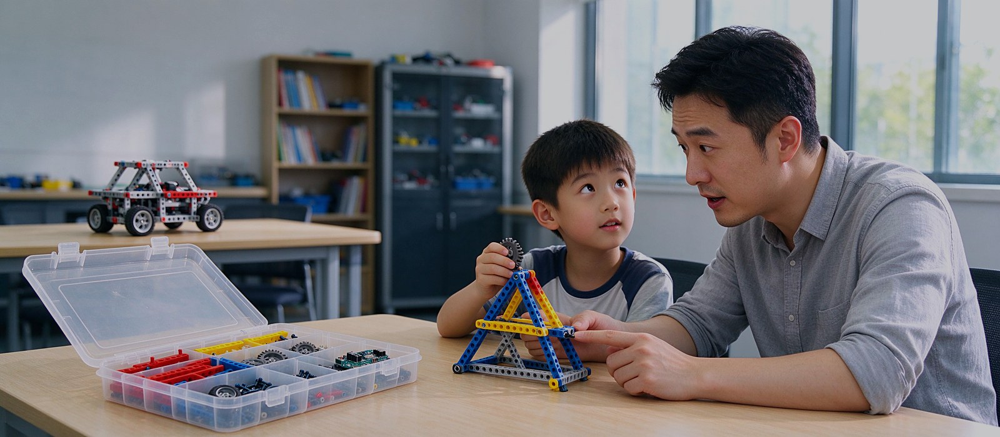

机器人课该不该给图纸？试听课两个动作就能试出来
差别不在老师讲得好不好，在老师有没有临场决策权。图纸课教案固定、样板固定，孩子拼出来都长一样；启发课给任务不给图纸。试听课两个动作：让他提一个离谱方案，再问零件是不是开放取用。

结论先行：“给不给图纸”看着是个教学细节，实际决定的是老师有没有临场决策权。教案固定、样板固定、每节课产出同一个模型的课，老师不需要拆解工程问题，孩子也不需要真的思考。试听课有两个动作能当场分辨：让孩子提一个离谱方案，看老师接不接；问一句零件是不是开放取用。
一、“图纸流水线”长什么样
市面上相当一部分机构的模式是：一节课一个样板，老师照着流程带，孩子跟着步骤拼。它的好处很实在——进度可控、家长看得见成品、老师门槛低。问题也在这三点上：孩子的作品高度雷同；遇到“这里为什么这么装”的问题，答案往往只有“书上就是这么画的”；一旦脱离图纸，孩子和老师同时卡住。
这不是说图纸课没有价值。低龄第一次接触、或者只想快速做出一个能跑的东西时，图纸是有效的脚手架。真正要警惕的是只有图纸：从第一节课到第三十节课，孩子始终在复制别人的方案。
二、不给图纸，难的是老师
给任务不给图纸，对孩子是解放，对老师是加压。同一个“让机械手把积木从 A 搬到 B”，四个孩子可能给出四种方案：连杆的、绳索的、齿轮传动的、干脆用两个舵机硬掰的。老师得当场判断哪条路能走通、会在哪一步塌、塌了之后该问什么——这已经不是“带课”，是现场做工程判断。
所以启发式教学的门槛不在话术，在人。我们在招聘时会看机械、自动化方向的背景：能看懂结构受力、能判断齿轮比和扭矩够不够、能在孩子提出一个荒唐想法时立刻想出验证办法。只招“喜欢积木、有耐心”的助教，撑不住这种课堂。
三、四人小班是前提，不是卖点
启发式要靠逐个对话，班额一大人均时间就被摊薄，最后只能退回统一模板控进度。我们把班额压在 2–4 人，就是为了让老师能一个一个问“你这一步为什么这么改”。低龄 60 分钟／次、三年级以上 120 分钟／次，一周 1 次——时间也是成本，问得过来才谈得上引导。
四、试听课两个动作，试的是“真落地还是话术”
不用听介绍，两个动作就够。
- 动作一：让孩子当场提一个离谱方案。比如“小车不要轮子，用弹跳前进”。
真启发的老师会顺着问：那怎么减震、怎么储能？哪个零件可能实现？失败了要不要记下来？
图纸思维的老师会说：这个不行，咱们先按这个模型做。 - 动作二：问零件自由度。这节课的特殊零件、零散颗粒是不是开放取用，还是规定“今天只能用这一盒”。真做原创设计的课，零件库是开放的；图纸班通常一盒对应一个模型，多拿一个都算超纲。
两个动作的分野很清楚：前者在问“你怎么想”，后者在问“你跟上了没有”。
五、什么孩子不适合启发式
说清楚边界：需要明确步骤才安心的孩子，一开始会不适应，得先给半张图纸过渡；目标只是照套路打完某场比赛的孩子，启发式反而慢；家长若以“每节课必须带回一个成品”为验收标准，也很难接受孩子花两节课只为一个结构反复推翻重搭。这几种情况，先选结构清晰的课更合适。
六、下一步
想验证我们是不是这样上课，最直接的办法是来听一节：看老师给的是任务还是图纸，看孩子塌了之后老师先动手还是先提问。校区在天津市河西区大沽南路 459 号下瓦房晶采大厦写字楼四楼 408 室，09:00–19:00 可到访。
题图：本站为说明启发式教学形式生成的教学场景示意图，非校区实拍照片。
想了解这节课适不适合孩子？
校区在天津市河西区大沽南路 459 号下瓦房晶采大厦写字楼四楼 408 室，09:00–19:00 可到访，也可在线预约体验课。